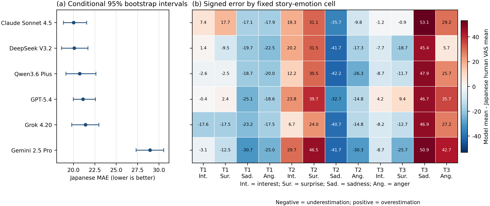
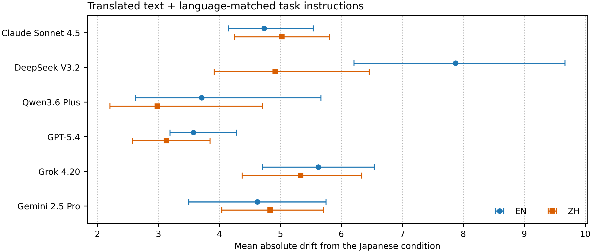

ICECCME 2026 · Paper 648 · Bali, Indonesia · 15–17 October 2026
Naruki Shirahama · Yuma Yoshimoto · Naofumi
Nakaya
Junji Nishino · Satoshi Watanabe
Shimonoseki City University · NIT (KOSEN), Kitakyushu College · Juntendo
University
Tamagawa University · Shizuoka Institute of Science and
Technology
Presenter: Naruki Shirahama · Shimonoseki City University, Japan
Human ratings first; translated conditions as secondary probes.
ICECCME 2026 · Motivation
Stability and agreement with humans answer different questions.
ICECCME 2026 · Two evaluation questions
How close are Japanese model scores to Japanese human ratings?
Reference: Japanese human VAS means
How much do English and Chinese model scores change from Japanese?
Reference: the same model's Japanese scores
Less change across languages does not prove closer agreement with humans.
ICECCME 2026 · Experimental design
Works: T1 · The Pocket Watch; T2 · The Money and the Pistol; T3 · The Tattered Ostrich.
Collection: OpenRouter · 17–19 April 2026 (JST). The six models are listed in Table I.
ICECCME 2026 · Metrics
Distance between:
Japanese model means
and Japanese human
VAS means
Average absolute difference over 12 cells.
Distance between:
English or Chinese model means
and the
same model's Japanese means
Average absolute difference over 12 cells.
Model means use 10 repetitions. Average drift = (EN drift + ZH drift) / 2.
Lower values are better on each axis. There is no combined deployment score.
ICECCME 2026 · Uncertainty and sensitivity
The intervals are conditional on this fixed 12-cell benchmark.
ICECCME 2026 · Alignment with Japanese human ratings
MAE: average distance from human ratings. Lower is closer. Intervals apply to 12 fixed cells.

ICECCME 2026 · Cell errors and composition sensitivity
Signed error = model mean − Japanese human VAS mean · Red: higher · Blue: lower
ICECCME 2026 · Translated-condition robustness
EN/ZH versus the same model's Japanese scores · Lower is less change · Conditional 95% intervals

ICECCME 2026 · Table I
Point estimates · Lower MAE and drift are better · Correlations are exploratory over 12 fixed cells
| Model | JA MAE | JA Pearson r | JA Spearman ρ | EN drift | ZH drift | Avg drift |
|---|---|---|---|---|---|---|
| Claude Sonnet 4.5 | 20.026 | 0.442 | 0.252 | 4.733 | 5.025 | 4.879 |
| DeepSeek V3.2 | 20.100 | 0.459 | 0.301 | 7.875 | 4.917 | 6.396 |
| Qwen3.6 Plus | 20.744 | 0.374 | 0.214 | 3.708 | 2.983 | 3.346 |
| GPT-5.4 | 21.113 | 0.475 | 0.441 | 3.575 | 3.133 | 3.354 |
| Grok 4.20 | 21.410 | 0.305 | 0.112 | 5.625 | 5.333 | 5.479 |
| Gemini 2.5 Pro | 28.952 | 0.261 | 0.112 | 4.625 | 4.833 | 4.729 |
ICECCME 2026 · Limitations
Conditional intervals do not establish validity for new works, readers, prompts or languages.
ICECCME 2026 · Conclusions
No unique top model is resolved within the four lowest Japanese MAE point estimates.
ICECCME 2026 · Acknowledgments / Q&A
Partially supported by JSPS KAKENHI
Grant numbers 26K14983 and 24K13350
Human reference · Uncertainty · Translated-condition drift